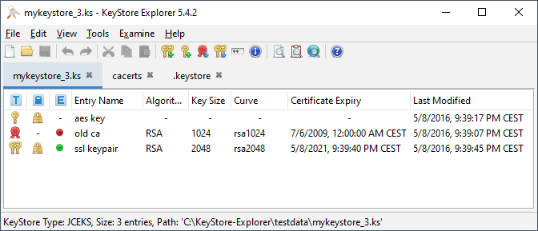

User Interface Overview
Main Window
KeyStore Explorer utilizes a Multiple Document Interface (MDI)
to display and edit KeyStores:

The main elements of the interface are described in the following
sections.
Menu Bar

KeyStore files can be created, opened, saved and closed via the
File menu.
Operations can be undone and redone, and KeyStore entries can be cut, copied
or pasted using the Edit menu.
Various options to alter the application's display are available via
the View menu.
General KeyStore maintenance operations are accessible through
the Tools menu. These general operations include the capability
to examine the content of certificate files, to import trusted
certificates, to generate Key Pairs and change KeyStore type.
The contents of Certificate and CRL files and SSL connections
can be examined through items in the Examine menu.
Help, licensing and various diagnostic dialogs are available via the
Help menu.
Tool Bar

Many of the operations found in the File, Edit,
Tools and Examine menus are also available on the
tool bar. In addition, most operations
also have keyboard shortcuts.
Tabs

All open KeyStores are displayed in a tabbed interface. The currently
active KeyStore is selected by clicking on the appropriate tab.
KeyStore Entries

The entries contained within the currently active KeyStore are displayed
as a table with the following columns:
-
 Type -
Type -
 Trusted Certificate,
Trusted Certificate,
 Key Pair or
Key Pair or
 Key.
Key.
-
 Lock Status -
Lock Status -
 Locked or
Locked or
 Unlocked
for Key Pair entries.
Unlocked
for Key Pair entries.
-
 Certificate Expiry Status -
Certificate Expiry Status -
 Unexpired or
Unexpired or
 Expired
for Trusted Certificate
and Key Pair entries.
Expired
for Trusted Certificate
and Key Pair entries.
-
Entry Name - entry's alias name.
-
Algorithm - entry's key algorithm.
-
Certificate Expiry - entry's certificate expiry date and time.
-
Last Modified - entry's last modification date and time.
Entry Menus
Operations specific to a KeyStore entry can be accessed by
right-clicking on the particular entry in the table and selecting
the required operation from the pop-up menu. The options
available in the pop-up menu differ depending on the KeyStore entry
type.
For example, Trusted Certificate entries can be examined,
deleted or renamed. Key Pair entries can additionally
have their passwords set, be used to generate CSRs, etc. Key
entries can be deleted.
Status Bar

Below the entry table is a status bar displaying the KeyStore's type,
number of entries and file path.